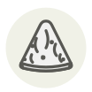

Blue cheese
Fromage bleu
| Latin name | Penicillium roqueforti |
|---|---|
| Family | Dairy & eggs |
| Origin | Cave-ripened, across Europe |
| Season | All year |
| Flavour | Pungent · Salty · Creamy · Rich |
| Typical price | 10–20 €/kg |
What it is
One mould makes the whole family: Penicillium roqueforti, needled into the wheel so that air can reach it, blooms blue-green wherever it finds oxygen — Roquefort and bleu d’Auvergne in France, Stilton in England, Gorgonzola in Italy. The veins are its breathing paths, and the salt, always heavy, is what stops it from taking the whole cheese.
In the kitchen
Its salt and power beg for sweetness: pears, figs, honey, sweet wines. Crumbled over a hot steak, it becomes an instant sauce.
Goes with
Pear Walnut Honey Fig Celery Grape Beef
Same species
Also used with
Fir honeydew honey Heather honey Honeycomb Leatherwood honey Manuka honey Moscatel vinegar
Something wrong here, or missing? Tell us